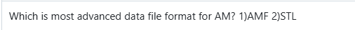
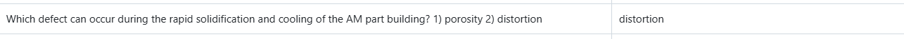

AM Dataset for GenAI Models
This section provides a collection of diverse AM datasets that can be used for training and benchmarking GenAI models. These datasets include design, pre-process data, build and monitoring, post-process, and quality measurement data, which are essential for developing robust and accurate GenAI models. By leveraging these datasets, researchers can enhance model performance, improve predictive capabilities, and drive innovations in AM.
Dataset Statistics
This project presents six types of AM datasets, totaling more than 100 questions. They include design, machine-dependent, machine-independent data, monitoring data, post-process, and quality measurement data. These datasets are created from different published papers. Below, we provide some examples of different types of datasets.
| AM Phase | MCQs | True/False | Free-Form |
|---|---|---|---|
| Design | 6 | 12 | 2 |
| Machine Dependent | 5 | 17 | 3 |
| Machine Independent | 4 | 10 | 2 |
| Monitoring | 3 | 10 | 3 |
| Post Process | 6 | 12 | 4 |
| Quality Measurement | 10 | 11 | 6 |
Source Codes
View RepositoryExamples from the Dataset
Design-related dataset:
Link to this dataset
Machine Dependent

Machine Independent

Build
Post Process

Quality
Back to Home